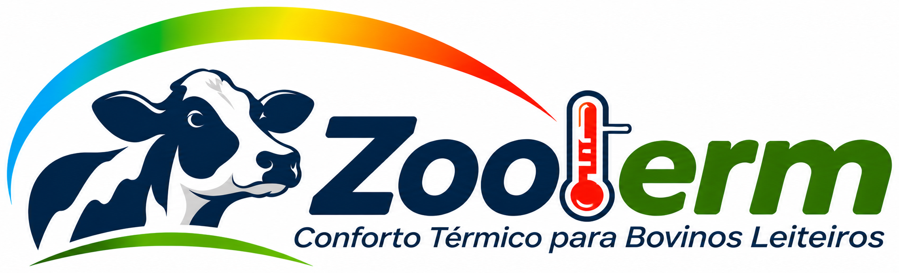

Histórico horário do ITU
Explore a variação do índice ao longo de meses, dias e horários, com base em dados históricos consolidados.
Conheça as condições de temperatura e umidade que influenciam o bem-estar dos bovinos leiteiros. Dados históricos e previsões para apoiar decisões no campo.

O ZooTerm foi desenvolvido para apoiar a avaliação do conforto térmico de bovinos leiteiros e a identificação de condições ambientais associadas ao estresse térmico. A plataforma reúne informações históricas do Índice de Temperatura e Umidade (ITU) e previsões meteorológicas para municípios do Sul do Brasil.
Uma interface interativa para explorar padrões históricos e condições previstas de conforto térmico.
Explore a variação do índice ao longo de meses, dias e horários, com base em dados históricos consolidados.
Consulte estimativas das condições ambientais para os próximos dias e antecipe situações de atenção.
Selecione localidades dos estados do Paraná, Santa Catarina e Rio Grande do Sul.
O ZooTerm reúne pesquisadores com experiências complementares em Zootecnia, Ciência Animal, Eletricidade, Automação e análise de dados.
Atuação em estatística aplicada, melhoramento animal, análise de dados e inteligência artificial.
Especialista em projetos de eletricidade e automação.
Pesquisador com formação em Ciência Animal.
Cadastre-se gratuitamente e confirme seu e-mail. Para usuários autenticados, a integração segura com o dashboard está em desenvolvimento.
O acesso ao dashboard ainda está em integração. O cadastro no site não libera, por enquanto, uma sessão protegida no Shiny.